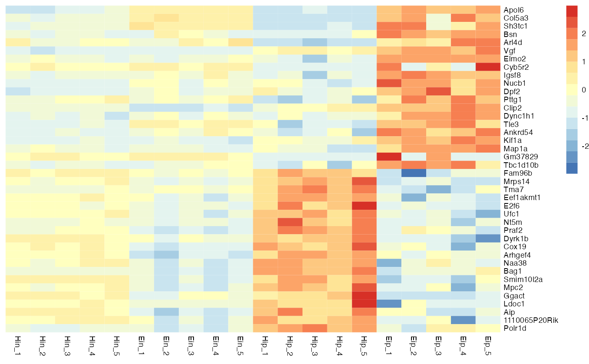
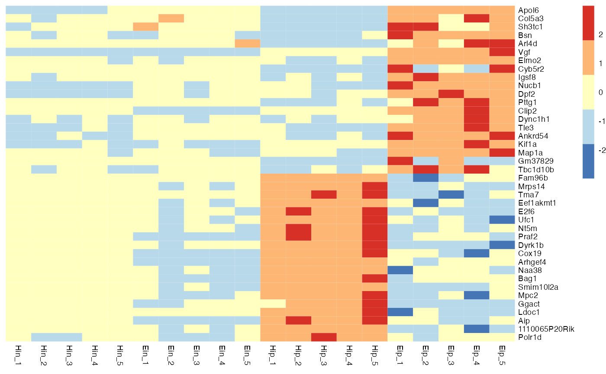
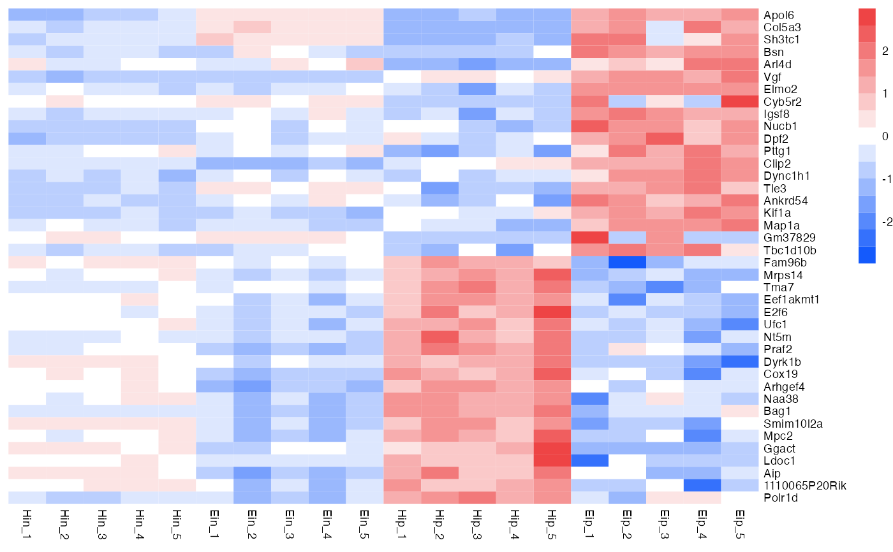
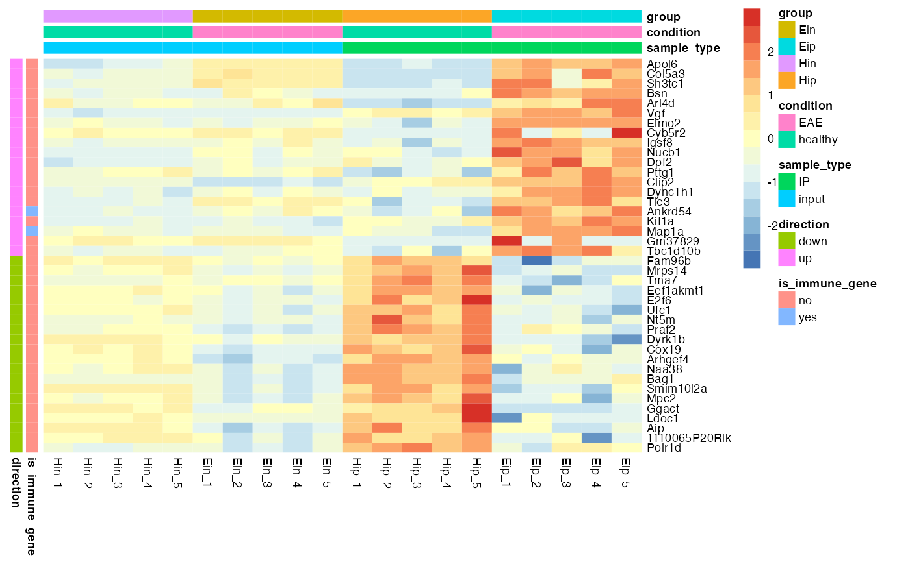
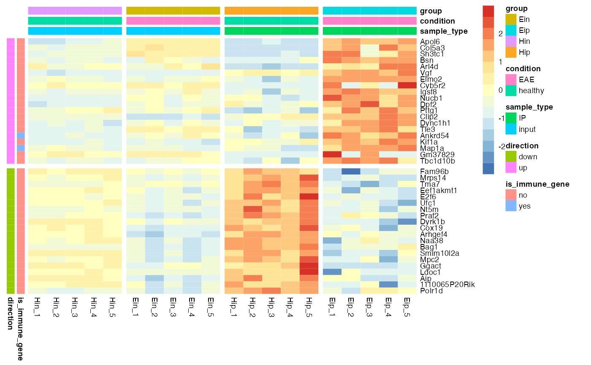

A tidyverse-style interface to the powerful heatmap package pheatmap by \@raivokolde. It enables the convenient generation of complex heatmaps from tidy data.
tidy_heatmap( df, rows, columns, values, colors = NA, color_legend_n = 15, color_legend_min = NA, color_legend_max = NA, color_na = "#DDDDDD", annotation_row = NULL, annotation_col = NULL, gaps_row = NULL, gaps_col = NULL, filename = NA, scale = "none", fontsize = 7, cellwidth = NA, cellheight = NA, cluster_rows = FALSE, cluster_cols = FALSE, border_color = NA, kmeans_k = NA, clustering_distance_rows = "euclidean", clustering_distance_cols = "euclidean", clustering_method = "complete", clustering_callback = function(x, ...) { return(x) }, cutree_rows = NA, cutree_cols = NA, treeheight_row = ifelse((class(cluster_rows) == "hclust") || cluster_rows, 50, 0), treeheight_col = ifelse((class(cluster_cols) == "hclust") || cluster_cols, 50, 0), legend = TRUE, legend_breaks = NA, legend_labels = NA, annotation_colors = NA, annotation_legend = TRUE, annotation_names_row = TRUE, annotation_names_col = TRUE, drop_levels = TRUE, show_rownames = TRUE, show_colnames = TRUE, main = NA, fontsize_row = fontsize, fontsize_col = fontsize, angle_col = c("270", "0", "45", "90", "315"), display_numbers = FALSE, number_format = "%.2f", number_color = "grey30", fontsize_number = 0.8 * fontsize, width = NA, height = NA, silent = FALSE )
| df | A tidy dataframe in long format. |
|---|---|
| rows, columns | Column in the dataframe to use for heatmap |
| values | Column in the dataframe containing the values to be color coded in the heatmap cells. |
| colors | Vector of colors used for the color legend. |
| color_legend_n | Number of colors in the color legend. |
| color_legend_min, color_legend_max | Min and max value of the color legend.
Values smaller then the |
| color_na | Color to use for |
| annotation_row, annotation_col | Column(s) in the dataframe to use for |
| gaps_row, gaps_col | Column in the dataframe to use for use for |
| filename | file path where to save the picture. Filetype is decided by the extension in the path. Currently following formats are supported: png, pdf, tiff, bmp, jpeg. Even if the plot does not fit into the plotting window, the file size is calculated so that the plot would fit there, unless specified otherwise. |
| scale | character indicating if the values should be centered and scaled in
either the row direction or the column direction, or none. Corresponding values are
|
| fontsize | base fontsize for the plot |
| cellwidth | individual cell width in points. If left as NA, then the values depend on the size of plotting window. |
| cellheight | individual cell height in points. If left as NA, then the values depend on the size of plotting window. |
| cluster_rows | boolean values determining if rows should be clustered or |
| cluster_cols | boolean values determining if columns should be clustered or |
| border_color | color of cell borders on heatmap, use NA if no border should be drawn. |
| kmeans_k | the number of kmeans clusters to make, if we want to aggregate the rows before drawing heatmap. If NA then the rows are not aggregated. |
| clustering_distance_rows | distance measure used in clustering rows. Possible
values are |
| clustering_distance_cols | distance measure used in clustering columns. Possible values the same as for clustering_distance_rows. |
| clustering_method | clustering method used. Accepts the same values as
|
| clustering_callback | callback function to modify the clustering. Is
called with two parameters: original |
| cutree_rows | number of clusters the rows are divided into, based on the hierarchical clustering (using cutree), if rows are not clustered, the argument is ignored |
| cutree_cols | similar to |
| treeheight_row | the height of a tree for rows, if these are clustered. Default value 50 points. |
| treeheight_col | the height of a tree for columns, if these are clustered. Default value 50 points. |
| legend | logical to determine if legend should be drawn or not. |
| legend_breaks | vector of breakpoints for the legend. |
| legend_labels | vector of labels for the |
| annotation_colors | list for specifying annotation_row and annotation_col track colors manually. It is possible to define the colors for only some of the features. Check examples for details. |
| annotation_legend | boolean value showing if the legend for annotation tracks should be drawn. |
| annotation_names_row | boolean value showing if the names for row annotation tracks should be drawn. |
| annotation_names_col | boolean value showing if the names for column annotation tracks should be drawn. |
| drop_levels | logical to determine if unused levels are also shown in the legend |
| show_rownames | boolean specifying if column names are be shown. |
| show_colnames | boolean specifying if column names are be shown. |
| main | the title of the plot |
| fontsize_row | fontsize for rownames (Default: fontsize) |
| fontsize_col | fontsize for colnames (Default: fontsize) |
| angle_col | angle of the column labels, right now one can choose only from few predefined options (0, 45, 90, 270 and 315) |
| display_numbers | logical determining if the numeric values are also printed to the cells. If this is a matrix (with same dimensions as original matrix), the contents of the matrix are shown instead of original values. |
| number_format | format strings (C printf style) of the numbers shown in cells.
For example " |
| number_color | color of the text |
| fontsize_number | fontsize of the numbers displayed in cells |
| width | manual option for determining the output file width in inches. |
| height | manual option for determining the output file height in inches. |
| silent | do not draw the plot (useful when using the gtable output) |
Invisibly a pheatmap object that is a list with components
tree_row the clustering of rows as hclust object
tree_col the clustering of columns as hclust object
kmeans the kmeans clustering of rows if parameter kmeans_k was specified
gtable a gtable object containing the heatmap, can be used for combining the heatmap with other plots
tidy_heatmap() requires tidy data in long format, see tidyverse.
For more documentation also look into the Get started guide.
# Basic example tidy_heatmap(data_exprs, rows = external_gene_name, columns = sample, values = expression, scale = "row" )# Change number of colors in color lengend tidy_heatmap(data_exprs, rows = external_gene_name, columns = sample, values = expression, scale = "row", color_legend_n = 5 )# Change color in color legend tidy_heatmap(data_exprs, rows = external_gene_name, columns = sample, values = expression, scale = "row", colors = c("#145afc","#ffffff","#ee4445") )# Add row and column annotation tidy_heatmap(data_exprs, rows = external_gene_name, columns = sample, values = expression, scale = "row", annotation_col = c(sample_type, condition, group), annotation_row = c(is_immune_gene, direction) )# Add gaps between rows and columns tidy_heatmap(data_exprs, rows = external_gene_name, columns = sample, values = expression, scale = "row", annotation_col = c(sample_type, condition, group), annotation_row = c(is_immune_gene, direction), gaps_row = direction, gaps_col = group )